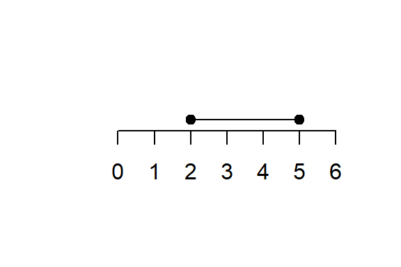

Chapter 5 Functions and Graphs
Reading Materials: Croft, A. and R. Davidson Foundation maths. (Harlow: Pearson, 2016) 6th edition. Chapter 17 Graphs of Functions.
Larson, R. Precalc with limits. (Boston, MA: Cengage, 2017) 4th edition. Chapter 1 Functions and their graphs (sections 1.1–1.8).
5.1 Numbers and Intervals
5.1.1 Number Sets
Mathematics often begins by classifying numbers into different sets. Each set expands on the previous one, allowing us to solve more and more problems.
1. Natural Numbers (\(\mathbb{N}\))
The counting numbers:
\[\begin{equation} \mathbb{N} = \{1, 2, 3, 4, \dots \} \end{equation}\]
Sometimes defined to include \(0\):
\[\begin{equation} \mathbb{N}_0 = \{0, 1, 2, 3, \dots \} \end{equation}\]
Example: number of students in a class, number of apples.
Whether natural number includes zero, depends on context and who you ask. For the sake of clarity, use \(\mathbb{N}_0\) when it includes zero.
2. Integers (\(\mathbb{Z}\))
Extends natural numbers by including zero and negative numbers:
\[\begin{equation} \mathbb{Z} = \{\dots, -3, -2, -1, 0, 1, 2, 3, \dots\} \end{equation}\]
Example: temperature in Celsius, bank account balance (can be negative).
3. Rational Numbers (\(\mathbb{Q}\))
Numbers that can be written as a fraction of two integers:
\[\begin{equation} \mathbb{Q} = \left\{ \frac{p}{q} : p, q \in \mathbb{Z}, q \neq 0 \right\} \end{equation}\]
Includes integers (since \(5 = \tfrac{5}{1}\)).
Decimal expansions of rationals are terminating (e.g. \(0.75\)) or repeating (e.g. \(0.333...\)).
Example: \(\tfrac{2}{3}, -\tfrac{7}{5}, 4.25\).
4. Real Numbers (\(\mathbb{R}\))
All numbers that can be placed on a continuous number line.
Includes both rational and irrational numbers.
Irrational: cannot be written as a fraction, decimal expansion is infinite and non-repeating.
- Examples: \(\pi, \sqrt{2}, e\).
Example: every measurement of length, mass, or time in physics is modeled as a real number.
5. Complex Numbers (\(\mathbb{C}\))
Extends real numbers by introducing the imaginary unit \(i\), where \(i^2 = -1\).
General form:
\[\begin{equation} z = a + bi \quad (a,b \in \mathbb{R}) \end{equation}\]
Real part = \(a\), Imaginary part = \(b\).
Example: \(3 + 4i\).
Complex numbers are essential in advanced math, physics, and engineering (e.g. AC circuits, quantum mechanics).
6. Irrational Number
The set of irrational numbers is
\[\begin{equation} \mathbb{R} \setminus \mathbb{Q} \end{equation}\]
i.e. all real numbers that are not rational. Examples: \(\pi, \sqrt{2}, e\).
Every real number is either rational or irrational, so we can write:
\[\begin{equation} \mathbb{R} = \mathbb{Q} \cup \left(\mathbb{R} \setminus \mathbb{Q}\right) \end{equation}\]
These two subsets are disjoint:
\[\begin{equation} \mathbb{Q} \cap \left(\mathbb{R} \setminus \mathbb{Q}\right) = \varnothing \end{equation}\]
\[\begin{equation} \mathbb{N} \subset \mathbb{Z} \subset \mathbb{Q} \subset \mathbb{R} \subset \mathbb{C} \end{equation}\]
5.1.2 Intervals on the Real Line
An interval is a set of real numbers between two endpoints \(a\) and \(b\) (\(a < b\)).
There are different types depending on whether endpoints are included or excluded:
1. Closed Interval
\[ [a, b] = \{x \in \mathbb{R} : a \leq x \leq b\} \]
- Both \(a\) and \(b\) are included.
- Example: \([2,5] = \{x: 2 \leq x \leq 5\}\).

2. Open Interval
\[ (a, b) = \{x \in \mathbb{R} : a < x < b\} \]
- Neither \(a\) nor \(b\) is included.
- Example: \((2,5) = \{x: 2 < x < 5\}\).
3. Half-Open Intervals
Left-closed, right-open:
\[ [a, b) = \{x \in \mathbb{R} : a \leq x < b\} \]
Left-open, right-closed:
\[ (a, b] = \{x \in \mathbb{R} : a < x \leq b\} \]
4. Infinite Intervals
- \((a, \infty) = \{x \in \mathbb{R} : x > a\}\)
- \([a, \infty) = \{x \in \mathbb{R} : x \geq a\}\)
- \((-\infty, b) = \{x \in \mathbb{R} : x < b\}\)
- \((-\infty, b] = \{x \in \mathbb{R} : x \leq b\}\)
Note: \(\infty\) and \(-\infty\) are not real numbers, so intervals involving them are always open on that side.